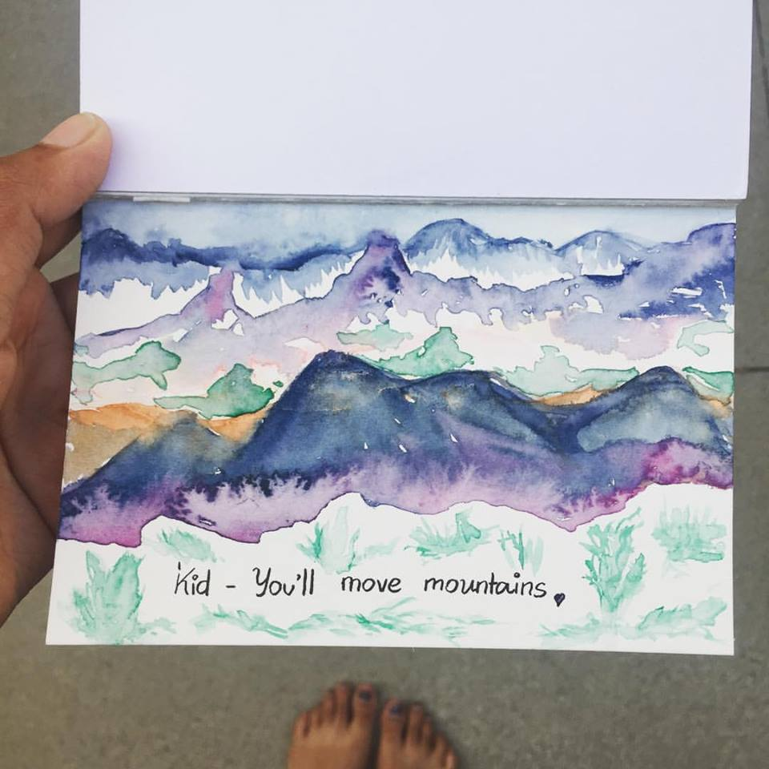

SAHANA MAHADEVAN

For my most recent work, this past summer- I worked at Kaiser Permanente's health innovation team as their UX and strategy intern.
I helped with design and development of Healthcare Innovation projects.
My roles and responsibilities included: User testing,
Analysis and Synthesis of data,
Product design, Market Research, Trend Analysis,
Facilitation of workshops,
High visibility communication design,
Shadowing Healthcare professionals,
Journey maps, Persona mapping, Behavioral design,
Exhibit design, Communication strategy,
Storyboarding and sketching,
Social media and content direction,
Clustering of field research,
Conducting interviews, Protocol design,
Outreach, Technology exploration,
Transcribing and Documentation,
Photography and Poster design.

And he said let's go already!
he said let's go already!